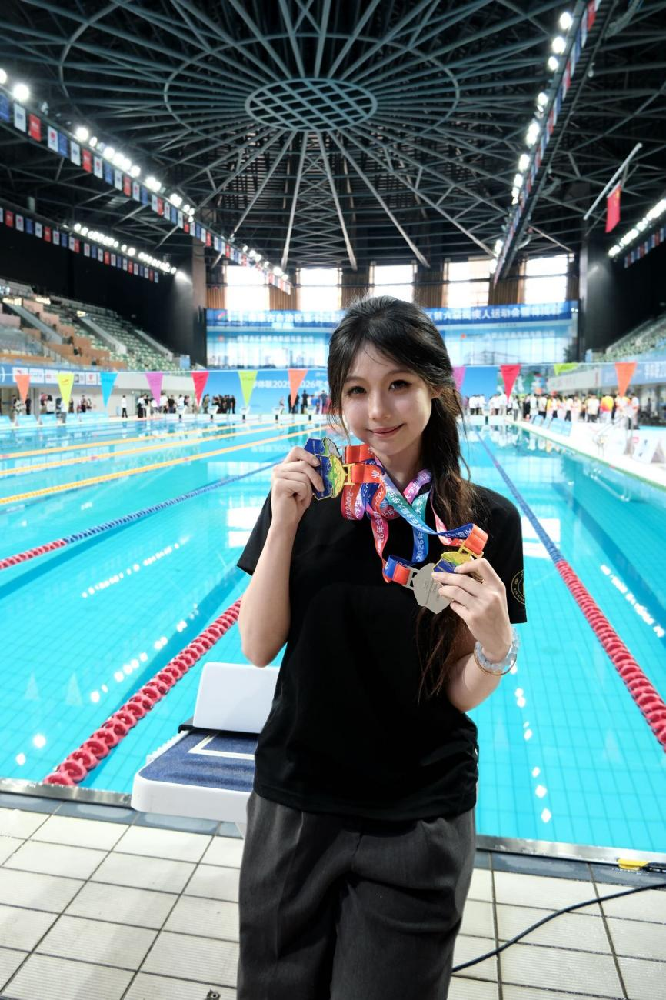

学院通知 · 竞赛比赛
两金两银！邹佳蕾领衔川大游泳队摘得接力赛桂冠
发布时间：2026-06-04
5月29日，在2025-2026年全国大学生游泳锦标赛（总决赛）第三个比赛日的激烈角逐中，四川大学游泳队邹佳蕾在女子丙A组 （ 高水平运动员组别 ） 200米自由泳决赛中以2:06.07的成绩夺冠，并携手队友夺得女子4×200米自由泳接力全国冠军；此外邹佳蕾还夺得男女4×100米自由泳接力和女子100米自由泳两枚银牌。 赛事地处海拔 1300多米的亚高原区域，对运动员的体能续航构成极大考验。赛后，邹佳蕾坦言：“能顶住不适拿下重点目标，是对长期训练的最好回馈 。 接力赛场没有 孤军奋战 的胜利，荣誉属于并肩拼搏的团队。 ”同时，她感恩学校和教练团队的悉心培养，表示未来将继续深耕训练，力争为学校再传捷报。 本次大赛两金两银的佳绩，既是邹佳蕾突破自我的成果，也是四川大学深耕高水平体育建设、落实德智体美劳全面发展育人理念的鲜活写照。 供稿：四川大学游泳队 图片：四川大学游泳队 校编：黄国翔 审核：李姗姗 贠琰 姚曦 柯志飞
